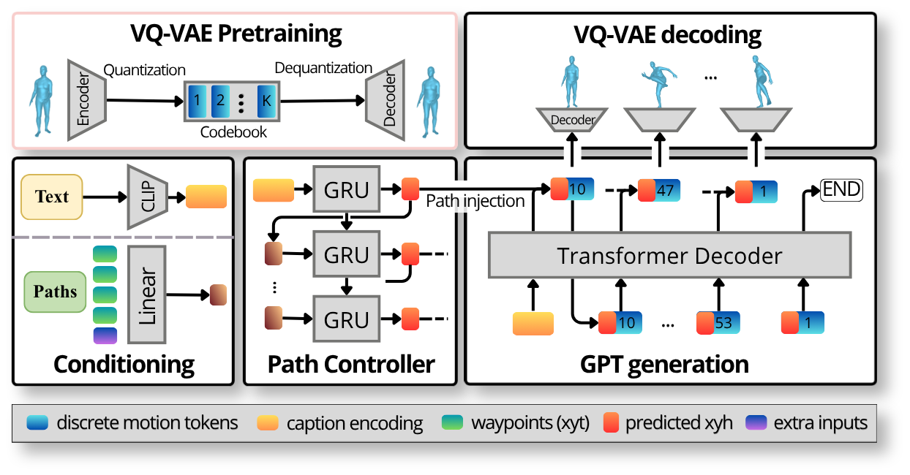
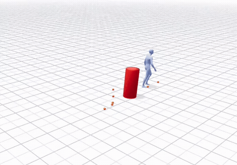
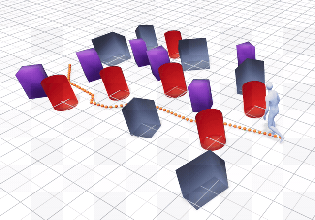

Project Report · CS-503, EPFL, 2026
Generating realistic human motion from natural language is a well-studied problem, but current state-of-the-art systems produce motion in a single expensive forward pass, making them too slow for interactive or online settings where the user needs to update constraints mid-execution. We present C-T2M, a controllable text-to-motion pipeline designed around speed and flexibility. The key idea is to decouple trajectory control from body motion generation: a small closed-loop GRU handles where the character goes, while an autoregressive Transformer over discrete motion tokens handles what it does. A deterministic recompose step blends the two at the end. Because the components are independent, path or text constraints can be updated mid-generation without restarting from scratch: the model re-uses the last few generated tokens as context and continues from the new condition. Our system runs at 413 ms per 200-frame clip, roughly 10× faster than Kimodo, and follows root XZ path constraints at 3.94 cm error versus Kimodo's 4.88 cm. We train on the BONES dataset, evaluate on both text-to-motion quality and constraint-following benchmarks, and include a systematic ablation of the main design choices.
The current state of the art in text-to-motion is dominated by diffusion systems such as Kimodo, which produce high-fidelity human motion conditioned on free-form text and support a rich set of kinematic constraints (pose, joint trajectory, root path). Kimodo is trained on the BONES dataset, a large-scale motion-capture corpus roughly ten times larger than the commonly used HumanML3D benchmark, which enables much of that quality improvement.
Despite these advances, current state-of-the-art systems share a common limitation: they generate the entire motion clip in a single, expensive forward pass (typically requiring tens to hundreds of denoising steps). This makes them unsuitable for online settings, where the user wants to update waypoints, captions, or scene geometry mid-execution, and for interactive settings, where latency directly bounds usability. A robotics policy, a digital twin, or an interactive game character all need motion generation that reacts to changing input without recomputing everything from scratch.
Recent text-to-motion literature has been dominated by diffusion models (MDM, MotionDiffuse, FLAME, ReMoDiffuse), which synthesise high-fidelity human movement by iteratively denoising continuous latent representations. A key advantage of the diffusion formulation is its amenability to complex spatial and temporal conditioning. Frameworks such as Kimodo, OmniControl and PriorMDM leverage this capability to introduce fine-grained kinematic constraints, including end-effector trajectories, root paths, and keyframe poses, typically via guided denoising or latent inpainting. However, their reliance on multiple reverse diffusion steps incurs high inference latency, severely limiting their deployment in real-time, dynamic environments.
To overcome this latency bottleneck, a parallel line of research reformulates motion generation as a discrete sequence prediction task. T2M-GPT pioneered this approach by compressing continuous 3D motion into a discrete vocabulary via a VQ-VAE and using a causal Transformer to autoregressively predict motion tokens from text. This paradigm has inspired numerous variants, including MotionGPT for unified multimodal tasks and T2M-HiFiGPT for enhanced artifact reduction. Notably, while successors like MoMask achieve superior generation fidelity by employing masked bidirectional modelling, this non-causal iterative refinement process breaks the strict left-to-right generation required for online, streaming applications. Consequently, we select the strictly causal T2M-GPT architecture as our baseline and extend it with an explicit, decoupled path controller.
At its core, text-to-motion predicts the 3D position of each joint of a humanoid skeleton, frame by frame, from a natural-language description. Our approach extends the T2M-GPT baseline with one key addition: an explicit path controller that lets the model follow spatial constraints, instead of leaving the trajectory entirely up to the language model. The pipeline consists of four blocks, summarised in Figure 1, that we describe in detail below.

The body decoder is a temporal vector-quantised autoencoder (VQ-VAE). The encoder maps a window of raw motion features into a sequence of discrete tokens drawn from a learned codebook; the decoder reconstructs continuous motion from those tokens. The autoregressive language model is then trained to predict these tokens, so "predicting motion" is reduced to "predicting codebook indices". We use a codebook of 2048 entries, a 2x temporal downsampling rate, and a window size of 64 frames. The choice of compression rate is studied in Section 3.4 and on the Ablations page; 4x converges to the lowest reconstruction loss and the highest per-clip code diversity, while 2x retains a denser token stream that the autoregressive model benefits from.
We additionally explore a residual VQ-VAE in which quantisation is performed at K hierarchical levels: at each level, the residual error left by the previous level is itself quantised by a dedicated codebook. The body language model is then adapted to predict K token streams per frame. We use K = 4 levels with 1024 codebook entries per level, trained with a cosine-weighted reconstruction loss that emphasises higher-frequency details at deeper levels. On the VQ-VAE reconstruction benchmark this lifts R-Precision by roughly 9 points on the Overview split and 12 points on the Timeline-multi split, halves the FID, and shaves about 6 cm/s off the foot-skating; full numbers are reported in the VQ-VAE reconstruction ablation.
The caption is embedded by a frozen CLIP text encoder (ViT-B/32) into a single 512-dimensional vector. Path constraints are encoded by a small linear projection that takes, for each frame, the next four waypoints (x, y, t) expressed relative to the skeleton's current position, plus its absolute position and current frame index. This compact representation is shared between the path controller and the body GPT.
The path controller is a closed-loop GRU (about 2 M parameters) that takes the caption embedding and path conditioning features and predicts, for each frame of the rollout, the next root (x, y) position and a heading angle. It is trained to minimise the regression loss to the ground-truth waypoint trajectory, plus a heading-smoothness regulariser that removes per-frame jitter and an arrive-radius gating that prevents orbiting around the final waypoint. The heading parameterisation is travel-relative (turn rate w.r.t. the direction of motion) rather than absolute world-frame yaw; on still frames, where the travel direction is ill-defined, we add an explicit target-zero loss on the predicted turn rate, which fixes the spin-on-spot pathology that arises with the naive travel-relative formulation.
The body GPT is a causal Transformer decoder over the VQ-VAE token vocabulary. At each step it predicts the next motion token conditioned on (a) the CLIP caption embedding, (b) the path conditioning features at the current frame, and (c) the previously predicted tokens. We use a 9-layer decoder with embedding dimension 1024, 16 attention heads, a block size of 51 tokens, and a feed-forward expansion factor of 4. Because the trajectory is provided to the GPT through the path conditioning, the GPT is no longer in charge of global position: it is conditioned on it, and instead focuses on producing motion that is consistent with the chosen trajectory. Trajectory comes from the controller, naturalness from the GPT.
At inference time we sample tokens with a sliding window of size SW = 25. We use plain multinomial sampling rather than greedy, top-p, or top-k; the decoder ablation shows that multinomial is the only sampler whose body motion does not collapse to a held pose on a non-trivial fraction of captions.
Finally, a deterministic recompose step blends the body GPT's predicted motion onto the controller's trajectory. The GPT outputs a locally-coherent gait; the controller produces a globally-correct root trajectory. The recompose step warps the body's local frames so that the root XZ position matches the controller's rollout exactly, while leaving the limbs, heading, and vertical motion untouched. This keeps the body GPT decoupled from the global path: it does not need to memorise long-range path-following, the controller does. Because the recompose step is closed form, it adds negligible latency.
Because the body GPT is autoregressive, generation can be interrupted at any frame. To update the motion mid-sequence (with a new text prompt, a new path constraint, or both), we apply an interrupt-and-re-generate procedure: the sequence is cut at the chosen frame, the last K generated tokens are kept as context, and the model re-generates the remainder conditioned on the new input. The retained tokens act as a warm start, so the body transitions smoothly into the new condition rather than resetting abruptly. The same procedure applies to path updates: the controller re-rolls from the cut point with the new waypoints, and the body GPT follows from its warm-start context. End-to-end latency per 200-frame clip is 413 ms, making real-time updates feasible.
We evaluate C-T2M against Kimodo on the BONES benchmark in two settings: standard text-to-motion (Section 4.2) and constraint following (Section 4.3). We then summarise the key ablations (Section 4.4), with full results on the Ablations page.
We train on the BONES dataset (full 127k clips). All quantitative results in this section use the BONES Repetition Text-to-Motion split (6,539 testcases), with held-out captions. We run stages 2-5 of the Kimodo benchmark pipeline (token decoding, motion synthesis, TMR text-encoder embedding, R-Precision and FID computation, and foot-skate scoring), so that all systems are evaluated by exactly the same downstream code. Latency is measured end-to-end on a single A100 80 GB GPU at fp32, batch size 1, 200-frame clip, averaged over 50 runs with 10 warm-ups.
Table 1 reports the headline comparison on the Repetition Text-to-Motion split. Our system reaches R@3 = 58.66 on the Overview split, at 10× lower latency than Kimodo (413 ms vs. 4280 ms per clip) and 20× fewer effective parameters (395 M vs. 8.3 B). We accept a quality deficit on this generic-text benchmark, driven by a narrower training vocabulary and by a single autoregressive pass per clip instead of 100 denoising steps. The foot-skate gap reflects the ceiling of the frame-level discrete VQ-VAE; a Kimodo-style foot-contact re-projection step would close most of this gap and is left to future work.
| Model | Params (M) | Latency (ms/clip) ↓ | R@3 ↑ | FID ↓ | Skate ↓ | Cont ↑ |
|---|---|---|---|---|---|---|
| Ground Truth | – | – | 94.03 | 0.000 | 2.11 | 1.000 |
| Kimodo-SOMA-SEED-v1.1 | 8 300 | 4280 | 88.07 | 0.007 | 3.74 | 0.978 |
| Ours | 395 | 413 | 58.66 | 0.191 | 33.07 | 0.617 |
On Kimodo's dedicated path-following split
(content/constraints_withtext/root/path_2dpos, 256
testcases), C-T2M reaches a 2D root error of 3.94 cm, slightly below
Kimodo's 4.88 cm on the same testcases under the same evaluator.
Root-accuracy (fraction of frames within 10 cm of the target path)
is 95.7 % for ours versus 93.4 % for Kimodo. Foot-skate and
contact consistency favour Kimodo, consistent with the VQ-VAE ceiling
discussed in Section 4.2.
| Model | 2D root error (cm) ↓ | Acc ≤ 10 cm ↑ | Foot skate ↓ | Contact ↑ |
|---|---|---|---|---|
| Ground truth (lower bound) | 3.76 | 1.000 | 0.103 | 1.000 |
| Kimodo-SOMA-SEED-v1.1 (DDIM 100) | 4.88 | 0.934 | 0.117 | 0.966 |
| Ours (decoupled) | 3.94 | 0.957 | 0.583 | 0.582 |
The full set of ablation tables and qualitative comparisons lives on the Ablations page. The key findings are:
Beyond the quantitative tables, we report a representative set of qualitative samples. All captions are held out from training.
Free-generation samples from our body GPT on held-out captions. Each clip is produced from the caption alone, with no path constraint, so what you see is the model interpreting the text without any spatial guidance.
“a person executes a front flip with a smooth landing”
“high jump over a moving pole in one place”
“lively charleston dance with a forward leg kick”
“a neutral throw and release of a ball”
Figure 2. Free text-to-motion samples on held-out captions.
Side-by-side comparison of three text-to-motion models on the same held-out captions. Kimodo is a diffusion-based baseline (state-of-the-art quality, slow); VQ-GPT is our single-codebook autoregressive model; RVQ-GPT is our residual-quantisation variant.
Walking along several user-specified XZ paths. The GRU controller rolls out the trajectory; the body GPT supplies the gait; the recompose step stitches them together. The same body GPT handles sparse waypoints, dense trajectories, and curves without retraining.
Dense spiral path.
Wavy dense trajectory.
Sparse waypoints, right arc.
Single diagonal waypoint.
Figure 5. Path-following samples with varying constraint densities.
Because trajectory and body are decoupled, the path can be edited mid rollout without restarting generation. The controller absorbs the new waypoints immediately and the body GPT continues synthesizing motion along the updated trajectory.

User redraws the path mid-rollout.

A* planned path around obstacles.
Figure 6. Online adaptation: the controller responds to waypoint edits in real time without re-running the body generator.
We probe how much of the text actually makes it into the motion with two complementary experiments. The sequential-prompts experiment on the home page tests captions that chain actions in time (do X, and then Y): up to Level 3 the motion follows the caption, but from Level 4 onwards the “and then” structure is lost. The simultaneous-prompts ablation tests the other direction (do X while doing Y): each action is generated correctly on its own, but combined in one caption the secondary ones (nodding, arm-raising) fade while the salient ones (walking, waving) dominate. Same takeaway in both directions: text is a lossy representation of motion when one caption tries to encode either an explicit temporal sequence or multiple simultaneous actions.
C-T2M shows that decoupling trajectory control from body motion generation is an effective strategy for fast, controllable text-to-motion. A small GRU handles where the character goes; an autoregressive Transformer handles what it does; a deterministic recompose step combines them. The result beats Kimodo on path adherence (3.94 cm vs. 4.88 cm) at roughly 10× lower latency and twenty times fewer parameters. Because generation is autoregressive and the components are independent, the pipeline also supports online adaptation: text and path constraints can be swapped mid-sequence with smooth transitions, without restarting from scratch.
@misc{ct2m2026,
title = {Controllable Autoregressive Text-to-Motion Generation},
author = {Amargant, Pau and Lopez, Miquel and Pilligua, Maria and Kolhe, Nahush Rajesh},
year = {2026},
note = {CS-503 Project, EPFL},
}